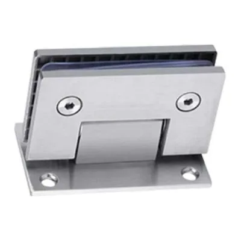
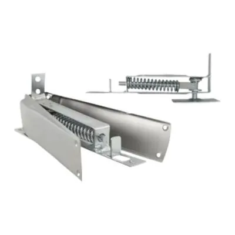
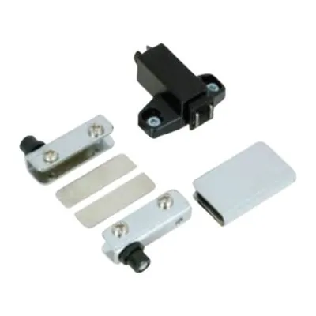

Herrajes para puertas, mamparas y divisiones de vidrio templado: bisagras de acero, cerraduras para vidrio, tiraderas, puntos fijos y soportes para vidrio y espejo. Trabajamos con marcas como Inox System, especializada en accesorios para vidrio templado.
Algunos de nuestros productos

Bisagra acero vidrio templadoVer en el catálogo → Cerradura para vidrioVer en el catálogo →
Cerradura para vidrioVer en el catálogo →
Bisagra piso IndumaVer en el catálogo →
Bisagra modular imantadaVer en el catálogo →También tenemos: Cerradura inferior para puerta de vidrio templado, Tiradera de acero para vidrio, Punto fijo de acero para pared, Punto fijo doble de acero para vidrio, Soporte para vidrio Fisting, Manitos para espejo, Soporte de acero redondo para espejo.
Ver toda la sección «Soportes para vidrio y espejo» en el catálogo
Por qué comprar en Alumol
- Desde 1982Más de 40 años distribuyendo en Guayaquil.
- Mejores preciosAl por mayor y al por menor.
- Asesoría y cotizacionesTe ayudamos a elegir la pieza correcta.
- Entrega en la ciudadSin costo en el perímetro urbano, en pedidos de mayor volumen.
Preguntas frecuentes
¿Venden por unidad?
Sí. Vendemos al por menor y al por mayor: desde una sola pieza para tu casa hasta pedidos grandes para talleres, negocios y constructoras.
¿Cómo sé cuál es la pieza que necesito?
Lo más seguro es traer la pieza vieja al local o mandarnos una foto por WhatsApp. Te asesoramos para elegir la correcta.
¿Por qué no aparecen los precios?
Los precios te los damos en la cotización, según lo que necesitas y la cantidad. Escríbenos por WhatsApp y te cotizamos.
¿Hacen entregas?
Sí. Entrega sin costo dentro del perímetro urbano de Guayaquil, en pedidos de mayor volumen y según disponibilidad del camión. También puedes retirar en el local.
¿Dónde están y en qué horario atienden?
En Lizardo García y Portete, Guayaquil. Lunes a viernes de 8:00 a 17:00; sábados y feriados de 8:00 a 14:00.
¿Necesitas accesorios para vidrio templado? Escríbenos con la foto o la medida y te cotizamos.
Cotizar por WhatsAppLlamar